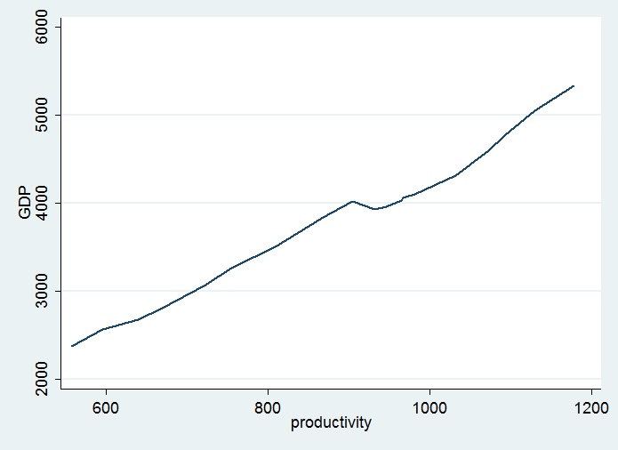
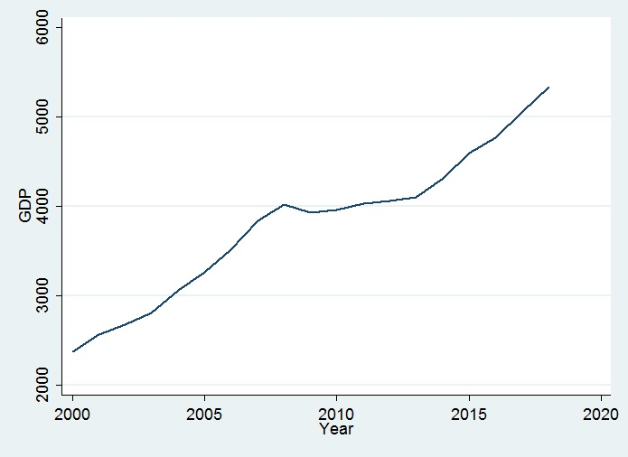
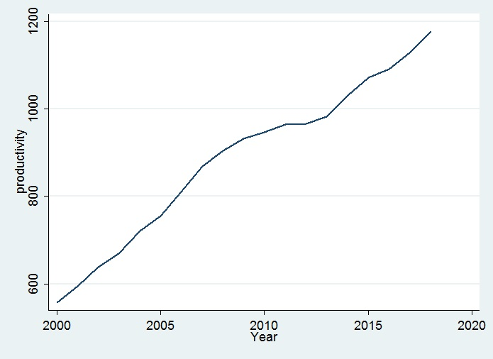

Residualise common trends consistently and distinguish fitted comparisons
Explanation, worked examples and practice
Useful first: Derive and interpret scalar and matrix OLS
Outcome and conditions
Choose a time form that matches the comparison Shared trends as an omitted-variable problem Detrend every variable using the same time form Why the slope agrees with including the trend
Study conditions, assessment scope and sources
Derive and calculate the trend-controlled slope and interpret fit/degree-of-freedom changes without claiming universal identification. Required components: time_form_and_omitted_trend, equal_slope_derivation_and_calculation, r2_df_rank_and_identification_limits. Supported work may use the cited notes; independent checks use no notes, internet, solution or hints. A basic calculator and blank paper are allowed; reasoning, formula selection and assumptions must be supplied by the learner. Numerical examples below are agent-created hypothetical instantiations unless explicitly labelled as a finished-note example. They do not assert current market or policy facts.
Prerequisites and checks
Check the prerequisites
O012-P1 / item_version 1: O002 is needed because OLS normal-equation orthogonality explains partialling out. Prompt: With full regressor columns \(1\),\(t,x\), which residual inner products vanish? Key: \(\sum_t e_t=0,\quad\sum_t t e_t=0,\quad\sum_t x_t e_t=0\) at OLS full rank. Pass requires the keyed mechanism and qualification; partial means an omitted step; fail means a conflicting mechanism. Adequate committed evidence under a compatible criterion permits skipping this diagnostic. Otherwise repair through Outcome and conditions before continuing.
Motivation and explanation
A deterministic linear trend shifts expected levels by units per period; a linear log trend on positive outcomes models approximately \(100b_1\%\) growth; a quadratic permits curvature. These time forms are substantive choices, not arbitrary polynomial tracking. If the true comparison includes \(\gamma t\) but the regression omits it, \(u_t=\gamma t+\varepsilon_t\) may be correlated with trending \(x\). Include the relevant controls or residualise \(y\) and every substantive \(x\) on exactly the same intercept/time basis and rows. In the full regression, \(e\) is orthogonal to \(1,t,x\). Since \(x_t=a_x+b_xt+\tilde x_t\) and the residualised columns are orthogonal to \(1,t\), \(\sum_t\tilde x_t e_t=0\); summing their equation yields \(\widehat\beta=\sum_t\tilde x_t\tilde y_t/\sum_t\tilde x_t^2\) when denominator \(>0\). It is a sample identity, not exogeneity. \(SSR\) is the same, but detrended \(R^2\) divides by \(\sum_t\tilde y_t^2\); full \(R^2\) divides by original \(TSS\). A strong time fit can coexist with weak residual \(x\) fit, as in the noted housing example. Full model degrees of freedom remain \(T-3\) for intercept/trend/one \(x\). Exact \(x\) trend causes rank failure; perfectly trend-fitted \(y\) makes residual \(R^2\) undefined. Correctly specified deterministic controls address that component, not every persistent process, serial correlation or causal identification.
Read the full explanation
Reading context
Deliver these complete reused passages before the worked example; earlier concise prompts are checkpoints, not substitutes. Necessary prerequisites use the complete prepared lessons specified above.
Source passage
Origin: reused complete checked passage What the source's three trend plots show; fingerprint 0e7fb5c1af7cabc4ea80572915d3578a657db087254f5d6e70a4f870eabc185f. Heading depth alone is adapted.
What the source's three trend plots show

Original embedded image: GDP against productivity, Lecture 2, PDF p. 32. The connected observations show a strong positive association in levels; the axes provide variable names and numeric scales but no units or country/sample provenance. Lecture 2, PDF p. 32

Original embedded image: GDP against Year, Lecture 2, PDF p. 33. GDP generally increases over the displayed years, with a pause or decline around the late 2000s. Lecture 2, PDF p. 33

Original embedded image: productivity against Year, Lecture 2, PDF p. 34. Productivity also generally increases over the displayed years. Lecture 2, PDF p. 34
Together the plots make the lecture's concern concrete: the positive relationship in the first image is observed between two variables that both trend in time. They do not establish that the entire relationship is spurious, nor do they provide detrended estimates or a causal test. The missing units and dataset provenance prevent a numerical slope interpretation from these figures alone. Their role is to motivate controlling the time pattern rather than treating the raw association as decisive evidence. Lecture 2, PDF pp. 26, 32–34
Source passage
Origin: reused complete checked passage Choose a time form that matches the comparison; fingerprint 0e7fb5c1af7cabc4ea80572915d3578a657db087254f5d6e70a4f870eabc185f. Heading depth alone is adapted.
Choose a time form that matches the comparison
A linear trend \(y_t=a_0+a_1t+e_t\) has expected level \(E[y_t]=a_0+a_1t\) when \(E[e_t]=0\); \(a_1\) is an average level change per period. A constant average percentage growth rate instead suggests a linear trend in the logarithm, \(\log y_t=b_0+b_1t+e_t\) for \(y_t>0\), with small-change growth approximately \(100b_1\%\) per period. A quadratic trend adds \(a_2t^2\) to allow curvature. These are alternative representations of a deterministic time pattern, not interchangeable instructions to apply the same linear trend to every original series. Wooldridge, 5th ed., PDF p. 392 (printed p. 364); Wooldridge, 5th ed., PDF p. 393 (printed p. 365); Wooldridge, 5th ed., PDF p. 394 (printed p. 366)
The textbook cautions against adding enough polynomial terms merely to track every movement: a simple broad time pattern serves the substantive model better than an arbitrarily flexible curve. A trend can coexist with correlated deviations around it, so trending variables do not automatically violate the classical assumptions if the model properly includes the relevant pattern. Wooldridge, 5th ed., PDF p. 394 (printed p. 366); Wooldridge, 5th ed., PDF p. 396 (printed p. 368)
Source passage
Origin: reused complete checked passage Shared trends as an omitted-variable problem; fingerprint 0e7fb5c1af7cabc4ea80572915d3578a657db087254f5d6e70a4f870eabc185f. Heading depth alone is adapted.
Shared trends as an omitted-variable problem
The lecture calls a relationship spurious correlation when the apparent association arises simply because both variables grow over time. Its explanation is that trending influences on \(y_t\) are omitted and correlated with an explanatory variable. This can violate zero conditional mean, the condition required by the time-series unbiasedness proof. Lecture 2, PDF pp. 26–27
Agent algebraic illustration of that mechanism. Suppose the intended specification is
If we omit \(t\), the short-model disturbance becomes \(u_t=\gamma t+\varepsilon_t\). If \(x_t\) also trends, its values can be correlated with this omitted component. The short-model slope then absorbs some common time pattern rather than isolating the relationship conditional on time. A large raw \(R^2\) does not demonstrate that the substantive regressor accounts for the movement independently of trend. This example explains the source's omitted-variable interpretation; it is not an estimated equation for its GDP/productivity figures. Lecture 2, PDF pp. 26–28
Source passage
Origin: reused complete checked passage Include an appropriate time trend; fingerprint 0e7fb5c1af7cabc4ea80572915d3578a657db087254f5d6e70a4f870eabc185f. Heading depth alone is adapted.
Include an appropriate time trend
The source's first remedy is to include the missing time variable in the regression. In the illustrative linear-trend model above, \(t\) counts periods, \(\gamma\) measures the systematic change per period, and \(\beta_1\) compares \(y\) and \(x\) after holding this time component fixed. The trend is an additional regressor, so it must satisfy the design's full-rank requirement. If \(x\) is exactly a linear function of the intercept and \(t\), its separate slope cannot be identified; if it is nearly so, the coefficient may be imprecise. This is an agent application of TS3 to the source's remedy. Lecture 2, PDF p. 28; Full rank, PDF p. 12
The advantage is a simple single regression. The source warns that its overall \(R^2\) can be high because the trend explains much of the original outcome variation. That \(R^2\) measures the fit of all included regressors, including time; it does not isolate the explanatory contribution of the substantive variable. Page 28 describes the difficulty as being unable to tell what portion is explained by explanatory variables when time is not counted as a substantive explanatory variable. Read this as a warning about interpreting the overall \(R^2\), rather than a statement that no conditional comparison is possible. Lecture 2, PDF p. 28, pros and cons
Qualification of the source's remedy: pp. 28–29 say that adding a trend or detrending eliminates the problem. The appropriate claim is conditional: removing a correctly specified common deterministic trend addresses that omitted component. Merely adding some trend does not prove exogeneity or remove every possible time-series specification problem. The uploaded slides provide no formal result guaranteeing that a linear trend cures arbitrary trending processes. Lecture 2, PDF pp. 28–29
The textbook also distinguishes deterministic trend from strong persistence. Its next-week discussion shows that a process can have a trending mean without strong persistence, or strong persistence without an obvious trend; fitting a deterministic trend is therefore not a universal treatment for all persistent processes. Only this limitation is carried into Week 2; random-walk derivations and transformation methods remain next-week material. Wooldridge, 5th ed., PDF p. 422 (printed p. 394); Wooldridge, 5th ed., PDF p. 423 (printed p. 395)
Source passage
Origin: reused complete checked passage Detrend every variable using the same time form; fingerprint 0e7fb5c1af7cabc4ea80572915d3578a657db087254f5d6e70a4f870eabc185f. Heading depth alone is adapted.
Detrend every variable using the same time form
The second remedy regresses each modeled variable on time and uses the residuals in the substantive regression. Agent expansion of the source's linear-trend procedure: first estimate
by OLS over the same sample, including an intercept in both detrending regressions. The residual \(\tilde y_t\) is the outcome's deviation from its fitted time trend, and \(\tilde x_t\) is the corresponding regressor deviation. Then regress \(\tilde y_t\) on \(\tilde x_t\). With multiple substantive regressors, detrend each one against the same intercept/trend columns and sample. The source stresses using the same form of time trend for all variables; changing the form or rows changes what is being removed. Lecture 2, PDF p. 29
Wooldridge explicitly confirms this residualization procedure and its equal-slope interpretation for the same sample and trend controls, including polynomial trends. Wooldridge, 5th ed., PDF p. 397 (printed p. 369)
Why the slope agrees with including the trend
The source gives no board-work derivation. The following is an agent derivation from OLS normal equations that makes the proposed method executable. In the full regression of \(y\) on an intercept, \(t\), and \(x\), let \(e_t\) be the fitted residual. It is orthogonal to the intercept and time: \(\sum_te_t=\sum_tte_t=0\). It is also orthogonal to \(x\): \(\sum_tx_te_t=0\). Since \(x_t=a_x+b_xt+\tilde x_t\), these equations imply \(\sum_t\tilde x_te_t=0\).
The detrended variables are themselves orthogonal to the intercept and time. Substituting the two detrending decompositions into the full model and multiplying by \(\tilde x_t\), the intercept/time terms drop out of the summed equation. Therefore
which is exactly the residual-regression slope, provided the denominator is positive. This shows why detrending both variables with identical controls isolates the same slope as including those controls in the full OLS regression. It does not supply an exogeneity assumption; it is a sample algebraic identity. The reasoning extends to several substantive regressors by their joint normal equations. Lecture 2, PDF p. 29, detrending procedure; OLS normal equations
Because the detrended residuals have zero mean, the residual regression has fitted intercept zero when an intercept is included. Its \(R^2\) can be written as
The denominator is outcome variation remaining after removal of the fitted trend, not the original outcome's total variation. Its interpretation is the fraction of that remaining variation fitted by the detrended substantive regressors. If \(y\) is perfectly explained by the trend, this denominator is zero and the detrended \(R^2\) is undefined. The source's claim that this \(R^2\) is informative should be read with its changed denominator in view. Lecture 2, PDF p. 29, \(R^2\) interpretation
A concrete textbook example explains why the denominator matters. For 42 annual U.S. housing observations (1947–1988), the estimated log-price elasticity of real per-capita housing investment is \(1.241\) (standard error \(0.382\)) without a trend, but \(-0.381\) (standard error \(0.679\)) with a linear trend. The trend-model overall \(R^2\) is \(0.341\), while the version that first nets the trend out of the outcome has \(R^2=0.008\). The substantive price variable explains very little of the deviations around trend in that fitted model. The book cautions that separate trend-regression standard errors may be unreliable because of serial correlation; these are reported textbook estimates, not independent data re-estimates or proof of no economic price effect. Wooldridge, 5th ed., PDF p. 395 (printed p. 367); Wooldridge, 5th ed., PDF p. 399 (printed p. 371)
The same source confirms \(1-SSR/\sum_t\tilde y_t^2\) and the need to preserve full-model degrees of freedom. For a classical \(F\) test computed using an \(R^2\) formula, use the usual full/restricted-model \(R^2\) values, not a substitute detrended goodness-of-fit measure. Wooldridge, 5th ed., PDF p. 398 (printed p. 370); Wooldridge, 5th ed., PDF p. 399 (printed p. 371)
Inference bookkeeping: equal slopes do not license naive degrees of freedom from a second-stage software printout. In the example with an intercept, one time trend, and one substantive regressor, the full model estimates three coefficients, so conventional residual degrees of freedom are \(T-3\). Use the full regression for its standard errors, or preserve the full-model degrees of freedom and assumptions when calculating them from residualized data. This is an agent implication of the p. 18 degrees-of-freedom formula. Lecture 2, PDF p. 18
Worked example
O012-W1 / item_version 1, worked_example. Prompt: Hypothetical model includes intercept, linear time and one substantive \(x\), sample \(T=8\). Consistent residualisation on the same rows/time controls gives \(\tilde x=(1,-1,-1,1,0,\ldots,0)\) and \(\tilde y=(3,-5,1,1,0,\ldots,0)\), where first four dates are \(1\)–\(4\). Original outcome \(TSS=100\). Derive the equal-slope normal-equation argument, calculate slope, \(SSR\), detrended \(R^2\), usual full-model \(R^2\) and full-model residual degrees of freedom. Explain what omitted \(\gamma t\) does if \(x\) trends, distinguish level/log/quadratic trend interpretation using a level \(\text{slope}=2\) means \(2\) outcome units per period, and state zero-denominator/rank boundaries. Do these transformations ensure causality or remove all persistent processes? Which \(R^2\) enters a conventional restricted/full-model \(F\) calculation?
Steps and interpretation: Residualised variables are orthogonal to the same intercept/time. Full-model residual \(e\) is orthogonal to \(x,1,t\); substituting \(x_t=a_x+b_xt+\tilde x_t\) gives \(\sum_t\tilde x_t e_t=0\), so \(\widehat\beta=\sum_t\tilde x_t\tilde y_t/\sum_t\tilde x_t^2 = 8/4=2\). Residual \(e=(1,-3,3,-1,0,\ldots), SSR=20\); \(\tilde y\) \(\text{SS}=36\). Detrended \(R^2=1-20/36=0.444444\); full \(R^2=1-20/100=0.800000\); full \(\mathrm{df}=8-3=5\), not a naive residual-stage \(T-2\). The detrended denominator measures variation left after trend, unlike original \(TSS\); use usual consistent restricted/full \(R^2\) for classical \(F\), not this changed denominator. Omitting \(\gamma t\) puts it in \(u\) and may correlate it with trending \(x\), violating zero conditional mean; raw \(R^2\) cannot isolate \(x\). Level trend slope is units/period; log trend for positive \(y\) has approximately \(100\times\text{coefficient}\%\) growth per period; quadratic permits curvature. Declared trend comparison: a level \(\text{slope}=2\) means \(2\) outcome units per period. Residual \(x\) denominator \(0\) means exact collinearity with trend/intercept, no separate slope; residual \(y\) denominator \(0\) makes detrended \(R^2\) undefined. Same controls and rows for every variable are necessary for equal slopes. This is OLS sample algebra and a remedy for the represented deterministic component, not proof of exogeneity/causality or a universal fix for persistence.
Supported completion
Write your reasoning, then reveal the complete key to check each step.
A local draft for your own study.
Reveal explanation
Key: Residualised variables are orthogonal to the same intercept/time. Full-model residual \(e\) is orthogonal to \(x,1,t\); substituting \(x_t=a_x+b_xt+\tilde x_t\) gives \(\sum_t\tilde x_t e_t=0\), so \(\widehat\beta=\sum_t\tilde x_t\tilde y_t/\sum_t\tilde x_t^2 = 4/4=1\). Residual \(e=(1,-3,3,-1,0,\ldots), SSR=20\); \(\tilde y\) \(\text{SS}=24\). Detrended \(R^2=1-20/24=0.166667\); full \(R^2=1-20/80=0.750000\); full \(\mathrm{df}=10-3=7\), not a naive residual-stage \(T-2\). The detrended denominator measures variation left after trend, unlike original \(TSS\); use usual consistent restricted/full \(R^2\) for classical \(F\), not this changed denominator. Omitting \(\gamma t\) puts it in \(u\) and may correlate it with trending \(x\), violating zero conditional mean; raw \(R^2\) cannot isolate \(x\). Level trend slope is units/period; log trend for positive \(y\) has approximately \(100\times\text{coefficient}\%\) growth per period; quadratic permits curvature. Declared trend comparison: log coefficient \(.02\) means approximately 2% growth per period. Residual \(x\) denominator \(0\) means exact collinearity with trend/intercept, no separate slope; residual \(y\) denominator \(0\) makes detrended \(R^2\) undefined. Same controls and rows for every variable are necessary for equal slopes. This is OLS sample algebra and a remedy for the represented deterministic component, not proof of exogeneity/causality or a universal fix for persistence.
Allowed support: show the named definition or equation in Motivation and explanation, then ask for the missing substitution and interpretation. At most two hints: first identify the relevant distinction; second point to the first keyed step. Reveal the worked solution if those fail. Supported success does not establish acquisition. Fade assistance only once the learner explains the keyed steps; then hide the solution and use an unused full check.
Rubric and independence
Self-assessment criteria and tutor checks
Pass requires every listed component, all requested outputs and essential keyed reasoning without a critical conceptual error. Algebraically equivalent formulas, explicitly defined opposite cash-flow signs and equivalent plain-language reasoning are accepted. Partial means a missing component or a correct method with an unresolved isolated arithmetic slip; fail means the central mechanism or condition is wrong. Unscorable means the response or help/exposure conditions cannot be established. Unknown conditions never certify independence. Arithmetic slips require independent correction before a pass. No numerical grade is invented.
Critical errors: Detrending only \(y\) or using different rows/forms; treating residual regression \(T-2\) \(\mathrm{df}\) as full-model \(\mathrm{df}\); substituting detrended \(R^2\) into classical \(F\); trend removal proves causality.
Acquisition requires two distinct unassisted passes from I1/I2/D1/D2 using the exact six routes in metadata. Each full prompt and key covers every component; any pair therefore covers the whole outcome twice. A fresh D item used for acquisition cannot later certify delayed retention. Worked/support/prerequisite items and the narrow C1 correction cannot substitute for a full check. The finite bank must not be reused after exposure; request a plan_issue when fewer than two fresh full items remain.
| Component | I1 | I2 | D1 | D2 |
|---|---|---|---|---|
| time_form_and_omitted_trend | required | required | required | required |
| equal_slope_derivation_and_calculation | required | required | required | required |
| r2_df_rank_and_identification_limits | required | required | required | required |
Misconceptions and correction
An equal-slope claim with only \(y\) detrended lacks common controls. Name and remove the same control columns from both variables, then preserve the full regression’s coefficient count. Observe the learner's reasoning before diagnosing: a sign or omitted word alone is tentative. Score before help. O012-C1 / item_version 1, narrow_correction. Fresh prompt: Fresh narrow check: \(y\) is perfectly linear in time, so all \(\tilde y=0\). Is detrended \(R^2=1\)? Key and rubric: Undefined: \(\sum_t\tilde y_t^2 = 0\) gives a zero denominator, not an informative residual fit measure. Pass only if the keyed repaired component is supplied; partial for an omission or arithmetic slip; fail for the same conflicting mechanism. C1 is not a full independent check. After two ineffective hints show the relevant worked step; after another failed correction pause and return to the named prerequisite or explanation.
Immediate and delayed checks
All items are item_version 1 and full_capability_check. I1/I2 are immediate forms; D1/D2 are distinct delayed forms. Delayed success requires an unused unassisted item before recap, at least 24 actual elapsed hours after acquisition and the most recent relevant teaching/solution exposure, with intervening exposure recorded. A date change alone does not qualify. Early D attempts may be acquisition checks only. Each item is a bounded parallel or near-context variant, not proof of broad transfer. Each key states the full required response; do not improvise extra variants.
A local draft for your own study.
Reveal explanation
Key and essential rubric: Residualised variables are orthogonal to the same intercept/time. Full-model residual \(e\) is orthogonal to \(x,1,t\); substituting \(x_t=a_x+b_xt+\tilde x_t\) gives \(\sum_t\tilde x_t e_t=0\), so \(\widehat\beta=\sum_t\tilde x_t\tilde y_t/\sum_t\tilde x_t^2 = 12/4=3\). Residual \(e=(1,-3,3,-1,0,\ldots), SSR=20\); \(\tilde y\) \(\text{SS}=56\). Detrended \(R^2=1-20/56=0.642857\); full \(R^2=1-20/200=0.900000\); full \(\mathrm{df}=12-3=9\), not a naive residual-stage \(T-2\). The detrended denominator measures variation left after trend, unlike original \(TSS\); use usual consistent restricted/full \(R^2\) for classical \(F\), not this changed denominator. Omitting \(\gamma t\) puts it in \(u\) and may correlate it with trending \(x\), violating zero conditional mean; raw \(R^2\) cannot isolate \(x\). Level trend slope is units/period; log trend for positive \(y\) has approximately \(100\times\text{coefficient}\%\) growth per period; quadratic permits curvature. Declared trend comparison: a quadratic coefficient adds curvature, not a constant level increment. Residual \(x\) denominator \(0\) means exact collinearity with trend/intercept, no separate slope; residual \(y\) denominator \(0\) makes detrended \(R^2\) undefined. Same controls and rows for every variable are necessary for equal slopes. This is OLS sample algebra and a remedy for the represented deterministic component, not proof of exogeneity/causality or a universal fix for persistence. All components are required.
A local draft for your own study.
Reveal explanation
Key and essential rubric: Residualised variables are orthogonal to the same intercept/time. Full-model residual \(e\) is orthogonal to \(x,1,t\); substituting \(x_t=a_x+b_xt+\tilde x_t\) gives \(\sum_t\tilde x_t e_t=0\), so \(\widehat\beta=\sum_t\tilde x_t\tilde y_t/\sum_t\tilde x_t^2 = 8/4=2\). Residual \(e=(2,-6,6,-2,0,\ldots), SSR=80\); \(\tilde y\) \(\text{SS}=96\). Detrended \(R^2=1-80/96=0.166667\); full \(R^2=1-80/300=0.733333\); full \(\mathrm{df}=16-3=13\), not a naive residual-stage \(T-2\). The detrended denominator measures variation left after trend, unlike original \(TSS\); use usual consistent restricted/full \(R^2\) for classical \(F\), not this changed denominator. Omitting \(\gamma t\) puts it in \(u\) and may correlate it with trending \(x\), violating zero conditional mean; raw \(R^2\) cannot isolate \(x\). Level trend slope is units/period; log trend for positive \(y\) has approximately \(100\times\text{coefficient}\%\) growth per period; quadratic permits curvature. Declared trend comparison: a level slope \(-1\) means one-unit expected decline per period. Residual \(x\) denominator \(0\) means exact collinearity with trend/intercept, no separate slope; residual \(y\) denominator \(0\) makes detrended \(R^2\) undefined. Same controls and rows for every variable are necessary for equal slopes. This is OLS sample algebra and a remedy for the represented deterministic component, not proof of exogeneity/causality or a universal fix for persistence. All components are required.
A local draft for your own study.
Reveal explanation
Key and essential rubric: Residualised variables are orthogonal to the same intercept/time. Full-model residual \(e\) is orthogonal to \(x,1,t\); substituting \(x_t=a_x+b_xt+\tilde x_t\) gives \(\sum_t\tilde x_t e_t=0\), so \(\widehat\beta=\sum_t\tilde x_t\tilde y_t/\sum_t\tilde x_t^2 = 16/4=4\). Residual \(e=(1,-3,3,-1,0,\ldots), SSR=20\); \(\tilde y\) \(\text{SS}=84\). Detrended \(R^2=1-20/84=0.761905\); full \(R^2=1-20/240=0.916667\); full \(\mathrm{df}=14-3=11\), not a naive residual-stage \(T-2\). The detrended denominator measures variation left after trend, unlike original \(TSS\); use usual consistent restricted/full \(R^2\) for classical \(F\), not this changed denominator. Omitting \(\gamma t\) puts it in \(u\) and may correlate it with trending \(x\), violating zero conditional mean; raw \(R^2\) cannot isolate \(x\). Level trend slope is units/period; log trend for positive \(y\) has approximately \(100\times\text{coefficient}\%\) growth per period; quadratic permits curvature. Declared trend comparison: log coefficient \(.03\) means approximately 3% growth for positive outcome. Residual \(x\) denominator \(0\) means exact collinearity with trend/intercept, no separate slope; residual \(y\) denominator \(0\) makes detrended \(R^2\) undefined. Same controls and rows for every variable are necessary for equal slopes. This is OLS sample algebra and a remedy for the represented deterministic component, not proof of exogeneity/causality or a universal fix for persistence. All components are required.
A local draft for your own study.
Reveal explanation
Key and essential rubric: Residualised variables are orthogonal to the same intercept/time. Full-model residual \(e\) is orthogonal to \(x,1,t\); substituting \(x_t=a_x+b_xt+\tilde x_t\) gives \(\sum_t\tilde x_t e_t=0\), so \(\widehat\beta=\sum_t\tilde x_t\tilde y_t/\sum_t\tilde x_t^2 = 4/4=1\). Residual \(e=(2,-6,6,-2,0,\ldots), SSR=80\); \(\tilde y\) \(\text{SS}=84\). Detrended \(R^2=1-80/84=0.047619\); full \(R^2=1-80/320=0.750000\); full \(\mathrm{df}=18-3=15\), not a naive residual-stage \(T-2\). The detrended denominator measures variation left after trend, unlike original \(TSS\); use usual consistent restricted/full \(R^2\) for classical \(F\), not this changed denominator. Omitting \(\gamma t\) puts it in \(u\) and may correlate it with trending \(x\), violating zero conditional mean; raw \(R^2\) cannot isolate \(x\). Level trend slope is units/period; log trend for positive \(y\) has approximately \(100\times\text{coefficient}\%\) growth per period; quadratic permits curvature. Declared trend comparison: quadratic time is a chosen deterministic basis, not a universal remedy. Residual \(x\) denominator \(0\) means exact collinearity with trend/intercept, no separate slope; residual \(y\) denominator \(0\) makes detrended \(R^2\) undefined. Same controls and rows for every variable are necessary for equal slopes. This is OLS sample algebra and a remedy for the represented deterministic component, not proof of exogeneity/causality or a universal fix for persistence. All components are required.
Content provenance and generation boundaries
Sources and scope
Complete checked-note passages above are reused with only heading-depth and explicit mathematical typography adaptation; exact origin/fingerprint and asset dependencies are in source_manifest.md. All earlier plan-created exercises/full keys and named evidence routes remain intact. Hypothetical arithmetic instantiates the included definitions and does not introduce empirical results or new academic claims. Only named prepared full-capability forms and their existing permitted pairs can certify acquisition/delayed evidence. Extra checked explanation/practice cannot replace a named full form or reassessment gate. Equivalent verified methods may meet the unchanged pre-answer criterion; ambiguous criteria or an exhausted fresh bank return to plan. The current objective revision is 2; item/criterion versions remain as explicitly stated above.